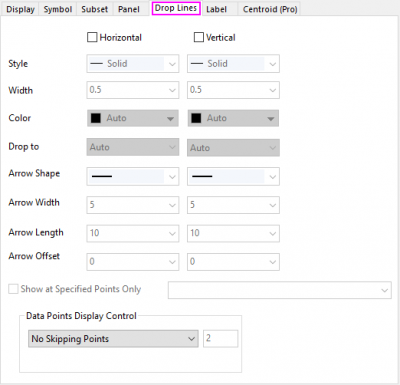
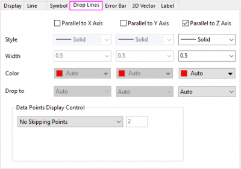
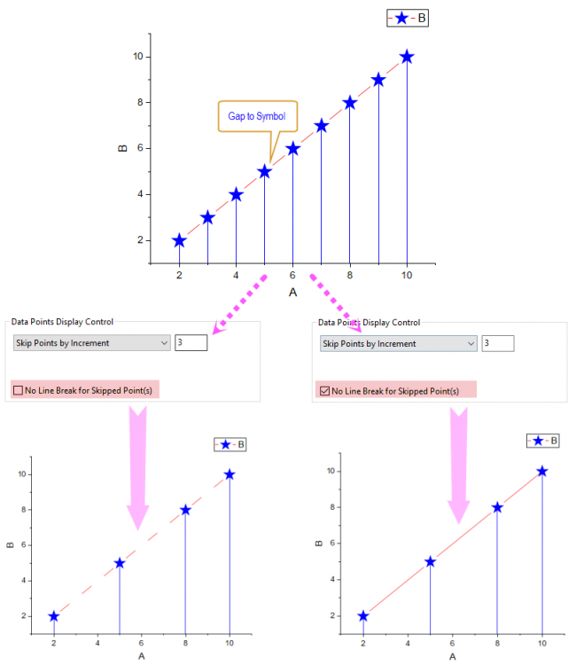

Sie können Ankerlinien zu beiden Achsen eines beliebigen 2D-Diagrammtyps, der Diagrammsymbole enthält, und zu jeder Ebene in 3D-Punktdiagrammen mit Ankerlinien hinzufügen.
| 2D-Diagramme |
3D-Punktdiagramm, ternäres 2D-/3D-Diagramm |
|  |  |
Für 2D-Diagramme mit kartesischen Koordinaten sind horizontale oder vertikale Ankerlinien optional.
Für 2D-Ternärdiagramme und 3D-Diagramme (einschließlich 3D-Ternärdiagramme) sind Ankerlinien Parallel zur XYZ-Achse optional. Für 3D-Punktdiagramme + Ankerlinien ist die Registerkarte Ankerlinien verfügbar, sowohl auf der Ebene Original als auch auf der Ebene XY/ZX/YZ-Projektion: Auf der Original-Ebene sind die Ankerlinien in allen drei Richtungen (parallel zur X/Y/Z-Achse) optional; auf Ebene der XY/ZX/YZ-Projektion sind jedoch nur zwei Richtungen entlang der Achsen des aktuellen Bedienfelds optional. So können Sie auf der Ebene der XY-Projektion zum Beispiel nur Ankerlinien einblenden, die parallel zur X- und Y-Achse sind. Für Ternäre 3D-Diagramme sind nur Ankerlinien parallel zur vertikalen Z-Achse (Zh) verfügbar. Im Gegensatz dazu ist es möglich, in allen drei Richtungen Ankerlinien für ternäre 2D-Diagramme hinzuzufügen.
Aktivieren Sie das Kontrollkästchen Horizontal/Vertikal oder Parallel zur XYZ-Achse, um horizontale oder vertikale Linien von jedem Datenpunktsymbol zur unteren X-Achse oder linken Y-Achse anzuzeigen. Wählen Sie dann Stil, Breite und Farbe für die Ankerlinie in den Auswahllisten Typ, Breite und Farbe aus.
Sie können die Farbe der Ankerlinien separat festlegen. Dazu verwenden Sie die Farbauswahl wie diejenige für die Datenzeichnungen.
Wenn Sie Automatisch aus der Auswahlliste Farbe auf der Unterregisterkarte Einzeln auswählen, verwendet Origin die mit den Schaltflächen Symbolfarbe oder Randfarbe auf der Registerkarte (Details Zeichnung) Symbol ausgewählte Farbe.
Sie können eine gewünschte Farbe festlegen, um sie auf alle Ankerlinien bei aktueller Richtung anzuwenden. Falls Sie eine benutzerdefinierte Farbe für die Ankerlinien definieren und verwenden möchten, lesen Sie diese Seite.
Auf der Unterregisterkarte Nach Punkten der Farbauswahl können Sie einen Datensatz verwenden, um die Farbe der Ankerlinien zu regeln.
Wie bei den Säulen/Balken im Brückendiagramm gibt es einen speziellen Typ der Farbsteuerung über Datensatz für die Ankerlinien:
Im Fall der Ankerlinienfarbe wird Y-Wert: Plus-Minus auf der Unterregisterkarte Nach Punkten der Farbauswahl angezeigt, wenn Zu nächster Datenzeichnung führen ausgewählt ist:
Wie bei Y-Wert: Plus-Minus-Summe im Brückendiagramm graut auch diese Methode die Farben nach der zweiten Farbe auf der Farbliste aus.
Hinweis: Diese spezielle Farbsteuerung ist auch für einige andere Diagrammobjekte anderer Diagrammtypen verfügbar:
|
Sie können diese Auswahlliste verwenden, um festzulegen, auf welche Linie (Achsenlinie oder zusätzliche Linie) oder Oberfläche (Achsenfeld oder Oberfläche aus 3D-Daten) die aktuellen Ankerlinien führen sollen.
Für 2D-Punkt-Liniendiagramme mit kartesischen Koordinaten sind vier Optionen in dieser Auswahlliste verfügbar:
Für ternäre 2D-Diagramme sind zwei Zielachsenlinien in dieser Auswahlliste verfügbar:
Für 3D-Punktdiagramme + Ankerlinien sind vier Optionen in dieser Auswahlliste verfügbar:
Für ternäre 3D-Punktdiagramme ist nur die Option Parallel zur Z-Achse verfügbar, die verwendet werden kann, um Ankerlinien entlang der vertikalen Z-Achse (Zh) hinzuzufügen.
Bei 2D-Punkt-/Liniendiagrammen im kartesischen Koordinatensystem dürfen Sie Pfeile am Ende der Ankerlinien einfügen.
Sie können die Pfeilform, Pfeilbreite und Pfeillänge für die Pfeile festlegen. Die Einheit der Pfeilbreite und Pfeillänge sind Punkte.
Bei ternären und 3D-Diagrammen unterstützt Origin nicht das Hinzufügen von Pfeilen am Ende der Ankerlinien.
Dieses Bedienelement kann verwendet werden, um Ankerlinien zu spezifischen Datenpunkte oder spezifischen X-Werten hinzuzufügen.
Hier werden fünf Syntaxen unterstützt:
Bitte beachten Sie, wenn Sie Ankerlinien hinzufügen, indem Sie die XY-Werte festlegen: Falls die festgelegten XY-Werte nicht auf die Datenpunkte führen, wird die Interpolation so durchgeführt, dass die festgelegten X-Werte bei den Verbindungslinien zwischen den am nächsten liegenden Datenpunkten gesucht werden. Und nur wenn die Verbindungslinie auf Gerade Linie gesetzt wurde, werden die Ankerlinien, die durch XY-Werte festgelegt wurden, ordnungsgemäß verwendet. Siehe folgendes Beispiel:
Legen Sie fest, ob und wie Datenpunkte übersprungen werden sollen, wenn Ankerlinien angezeigt werden.
Alle Datenpunkte haben ihre eigenen Ankerlinien, ohne dass Punkte übersprungen werden. Dies ist die Standardauswahl für diese Elementgruppe.
Wählen Sie Punkte nach Inkrement überspringen in der Auswahlliste, um eine festgelegte Häufigkeit von Datenpunkten anzuzeigen. Geben Sie dann die Häufigkeit in das zugehörige Textfeld ein. Diese Einstellung beeinflusst auch die Anzeige von Ankerlinien, Symbolen, Fehlerbalken und Datenbeschriftungen der Zeichnungen. Bei einem Vektordiagramm werden die Vektoren auch verborgen, wenn Streupunkte übersprungen werden. Bei der Projektion eines 3D-Punktdiagramms werden die Optionen zum Überspringen von Punkten verborgen und die Projektion überspringt Punkte, indem sie den folgenden Einstellungen der ursprünglichen Zeichnung folgt.
Wenn n in das Textfeld Punkte auslassen eingegeben wird, dann wird nur der erste von je n Datenpunkten angezeigt; die restlichen n-1 Datenpunkte werden übersprungen. Der letzte Datenpunkt jedoch wird immer gezeigt. Wenn Sie den letzten Punkt verbergen möchten, setzen Sie @SMEP = 0. n muss ein ganzzahliger Wert größer oder gleich 2 sein. Wenn n = 0 oder 1 ist, wird kein Punkt übersprungen.
Falls Abstand zu Symbol für ein Punkte-Liniendiagramm aktiviert ist, können Sie über das Kontrollkästchen Keine Linienunterbrechung für übersprungene Punkte bestimmen, die Linie unterbrochen wird, wenn Punkte übersprungen werden. Wenn dieses Kontrollkästchen aktiviert ist, ist die Linie weiterhin kontinuierlich, auch wenn die Datenpunkte ausgelassen werden.

Wählen Sie eine der Optionen des Intelligenten Überspringens, um die Datenpunkte mit einer Berechnung zu überspringen, die auf der Datendichte und der Kurvenform basiert.
Intelligentes Überspringen der Datenpunkte durch Festlegen der insgesamt nach dem Überspringen beibehaltenen Datenpunkte.
Intelligentes Überspringen der Datenpunkte durch Festlegen, wie viele Datenpunkte mit einem Prozentanteil aller Datenpunkte übersprungen werden.
Basierend auf den verschiedenen Kurvenformen und Datendichten, stehen vier Methoden zum Überspringen von Datenpunkten zur Verfügung:
Folgen Sie diesem Algorithmus, um Schritt für Schritt zu suchen. Es wird jedes Mal nur der Punkt mit der größten dreieckigen Fläche (zwischen dem Dreieck mit der aktuell größeren Fläche und dem Dreieck mit der kleineren Fläche auf höherer Ebene) behalten, bis die festgesetzte Anzahl von Punkten erreicht wird.